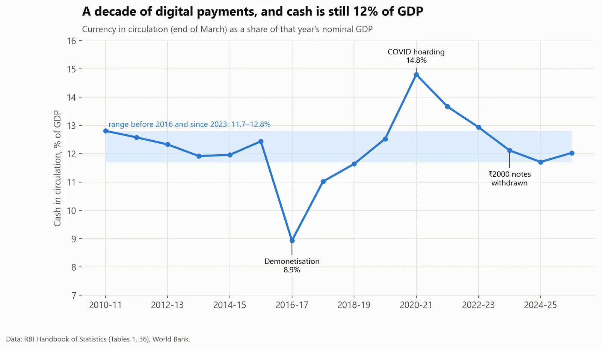
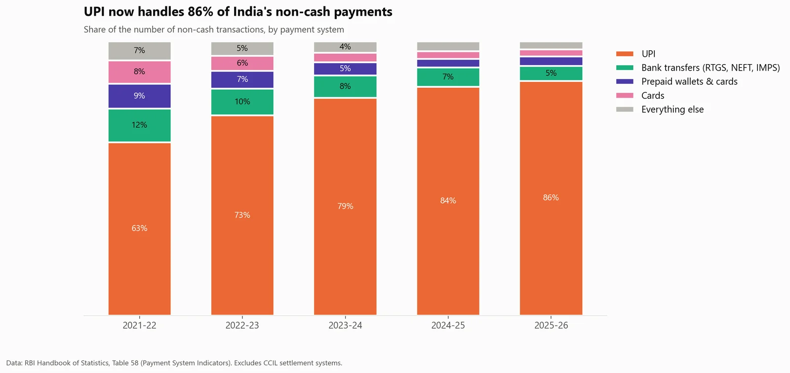
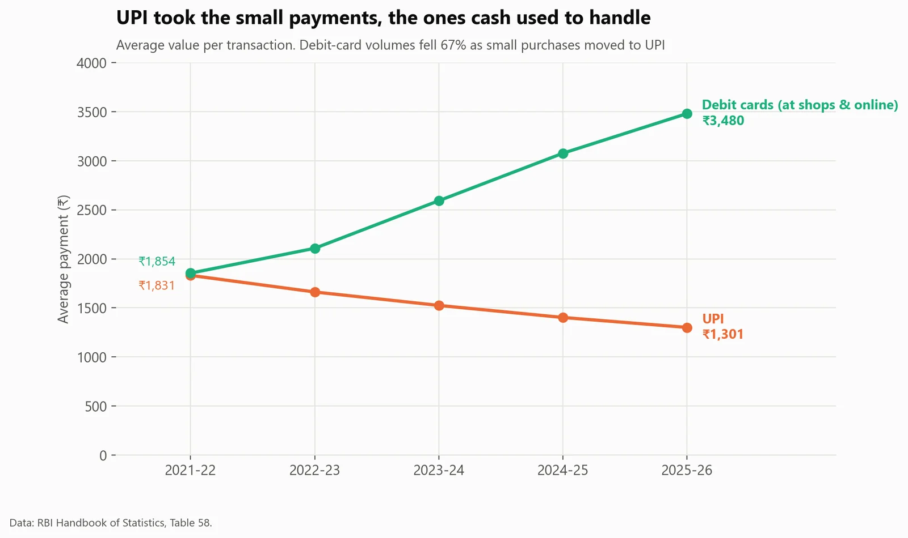
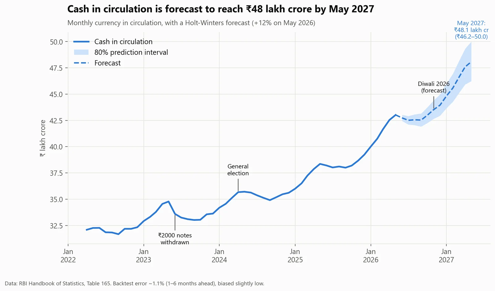

Finance · India
UPI won. So why is India holding more cash than ever?
- Business question
- UPI won. Should banks plan for less cash?
- Key finding
- No. Cash is still about 12% of GDP, where it was before UPI existed, while UPI now moves the equivalent of 91% of GDP a year. UPI replaced cash for spending, not for saving.
- Recommendation
- Plan cash logistics (ATMs, currency chests, note printing) for steady growth, not decline: cash is forecast to reach ₹48 lakh crore by May 2027.
- Estimated impact
- 1.1%Average error of the cash-demand forecast in a 25-period backtest (forecast: ₹48.1 lakh crore by May 2027, 80% range ₹46.2–50.0).
- Data
- Reserve Bank of India statistics (4 tables), World Bank GDP
- Period
- 2010-11 to 2025-26
- Tools
- SQL (DuckDB), Python (statsmodels)
Results





How I did it
- Read four messy RBI Excel tables into clean tables with Python.
- Built the analysis in SQL: staging tables, a consistent GDP series, then summary tables for each question. India changed its GDP base year in 2022-23, so older GDP values were rescaled using the year published on both bases. Without that, the cash-to-GDP ratio would show a fake 3% jump.
- Added 15 automated data-quality checks. For example, RBI's monthly and annual tables must agree for every March, and the individual payment systems must add up to RBI's reported totals.
- Compared three forecasting methods on 25 past periods before choosing Holt-Winters.
What could make this wrong
- Cash in circulation is a stock (measured at the end of March); UPI value is a flow (added up over the year). The chart compares their trends, not their sizes.
- There's no direct measure of how often people use cash, such as ATM withdrawals. "UPI took the small payments" is inferred from ticket sizes and card volumes.
- Official UPI figures in this source start in 2021-22.
What I learned
- Ratios can lie when a definition changes: India's GDP base-year change would have created a fake 3-point jump in cash-to-GDP.
- Stocks and flows can be compared on trend, not on size.
- Checking two official tables against each other catches errors neither shows alone.
What I'd do next
- Add ATM withdrawal data, to measure how much cash is actually used, not just held.
- Break cash demand down by region and note denomination.
- Re-run the forecast as each month's RBI data arrives and track its errors.